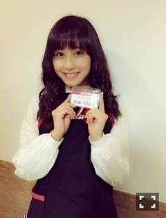

| 2016/11 20 Sun | 斎藤ちはる 新星堂さんへ。 |
ちはるーむへようこそ！
今日は、どうしても行ってみたかったので
お願いをし、新星堂草加ビル店に
お邪魔させていただきました！
嬉しい...！
ひょこっ
こんなに大きく展開していただいて
沢山のポップも作っていただいて
応援していただいているのを実感できて
本当に嬉しいし、
ありがとうございますという気持ちでいっぱいですヽ(；；)丿
実は「透明な色」発売記念
10福チェーン初売り合戦のときに
新星堂チームとしてやらせていだいてました！
なーちゃん、万理華、花奈と4人で。
最終的には1位になることが出来て
お渡し会にも参加しました！
今日店長さんや店員さんが
制服を着ていたのを見て
私も着ていたのを懐かしく思いました。

この時から縁がありまして
ずっとお礼が言いたかったのです。
やっとお邪魔できて良かったです！
もう既にお邪魔しちゃったよ〜という方も
いらっしゃると思うのですが...
(実際にファンの方も沢山来ていただいていますよ！という話も聞けて嬉しかった♡)
色紙やのぼりにサインもしてきたので
皆さん良かったら是非
見に行ってみてください！
(﹡ˆ ˆ﹡)
新星堂草加ビル店様、お邪魔しました♪
-------------------------♡
♬ ChihaMusic
「夜のマーチ」KANA-BOONさん
世の中に何かが足りなくて
何かを欲していて
何かを待っていて
何かを望んでいて
何かに幻想を抱いている。
そんな気持ちを表現してくれている
ような曲だと思う。
もどかしくて、でも歌は綺麗で。
"何不自由ない僕の青春は
こう見えて全然、自由なんかじゃない"
この歌詞が好き。
色々な気持ちを感じることができる。
声もいいなー好き。
明日からまた1週間が始まるよ...！
あっという間だな〜
でもあと少しで今年も終わってしまう。
あっという間だな〜
あっという間に過ぎて行ってしまう
人生って少し勿体無い気がする。
でもあっという間に感じるってことは
色々な出来事が起きていて
時間を感じる暇がないってことなのかな。
ということはあっという間に感じることは
良いことなのかな？
おやすみ〜
斎藤ちはる